REVISIÓN COMPLETA SEGÚN EL GUION
Aprender entre pantallas
La escena plantea el ejemplo; la conversación desarrolla las tres preguntas y termina con cierre, créditos y aplausos.
APOYO VISUAL SIMULADO · NO ES EL REGISTRO DE LOS PARTICIPANTES
La reproducción comenzará con la escena de ejemplo.
La apertura visual tiene imágenes, rótulos y música. La voz en off y la voz dramatizada aún están pendientes. El MP3 conserva toda la conversación grabada, sin recortes.
Material transmedia complementario
El montaje ampliado, el mapa y los 16 planos se consultan como anexos del caso, fuera de la apertura de 20 segundos.

1. Contexto y reconocimiento
01 · La microcuenca / bajo evidencia


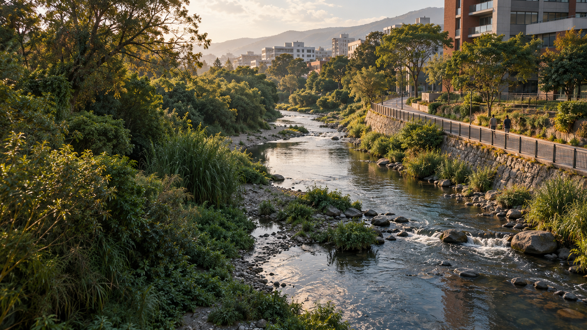
02 · Comprender el contexto03 · Recorrer el territorio

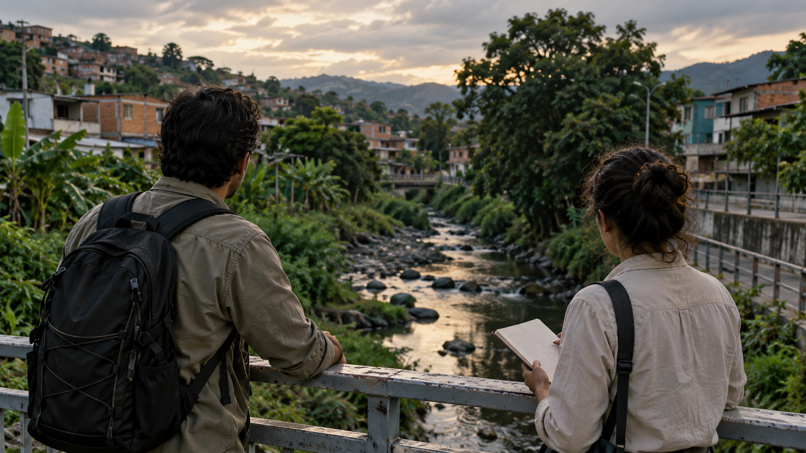
04 · Delimitar el problema2. Observación y escucha

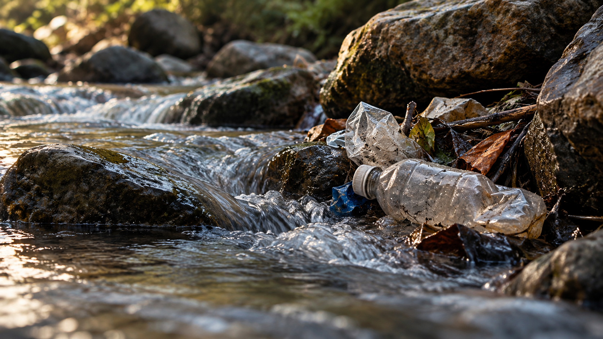
05 · Observar los indicios
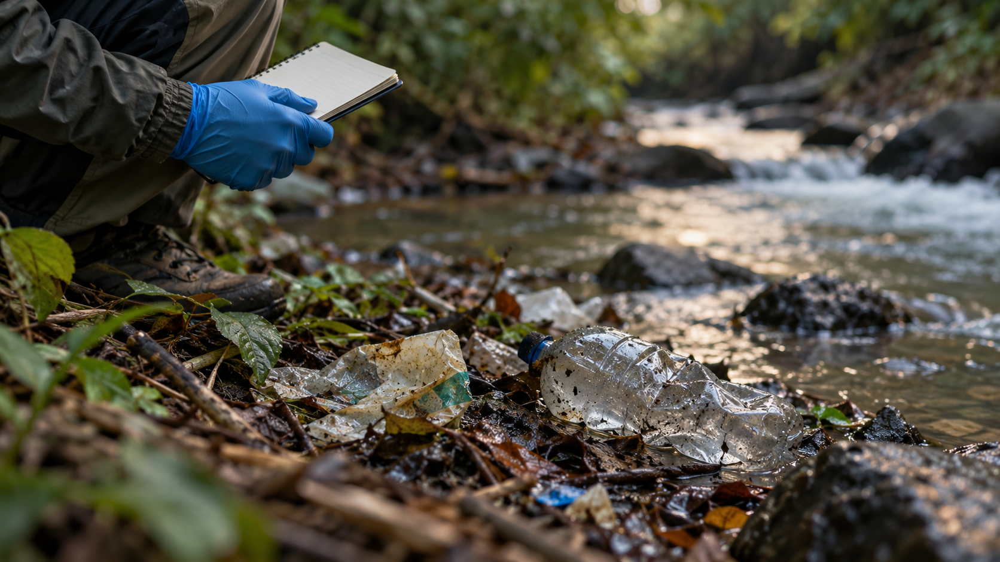
06 · Registrar lo observado
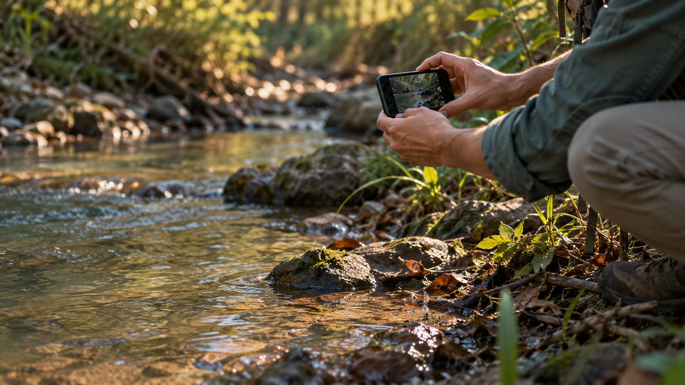
07 · Documentar con cuidado
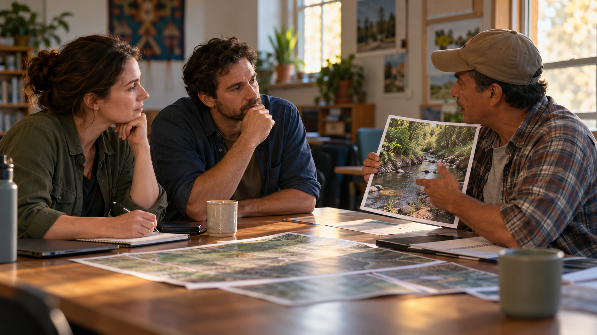
08 · Escuchar otras perspectivas
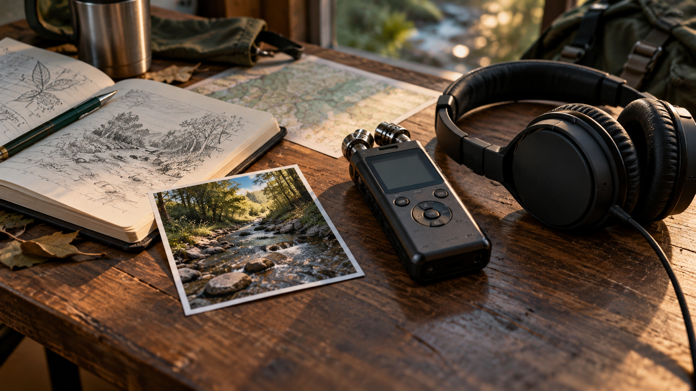
09 · Conservar el testimonio3. Contraste de fuentes
10 · Consultar los registros


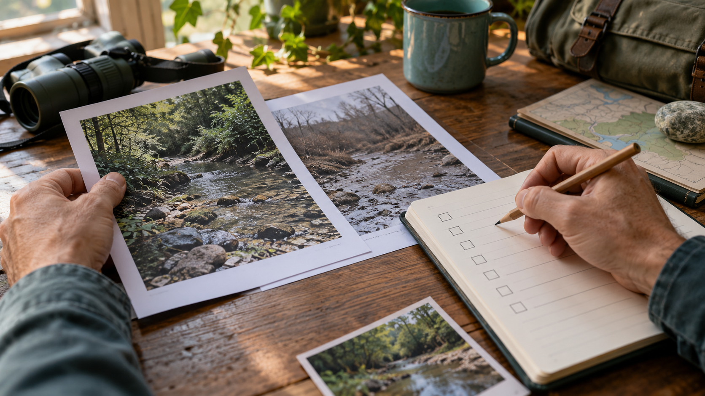
11 · Revisar la procedencia
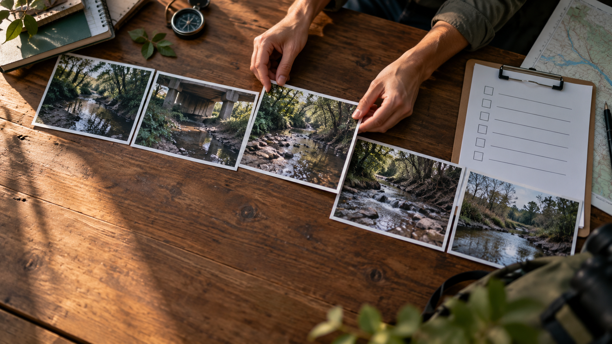
12 · Comparar las observaciones
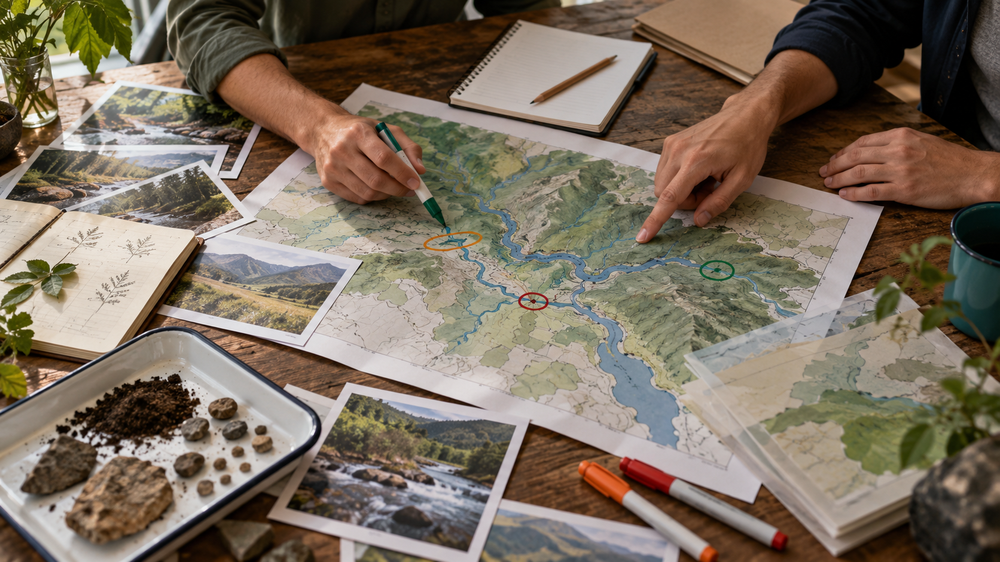
13 · Relacionar las piezas
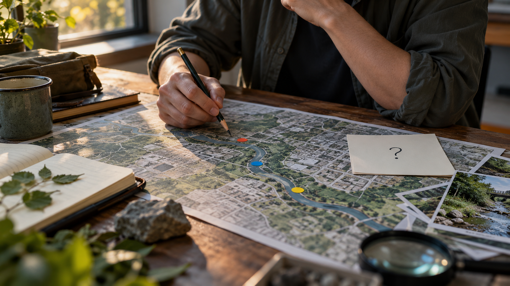
14 · Reconocer lo que falta